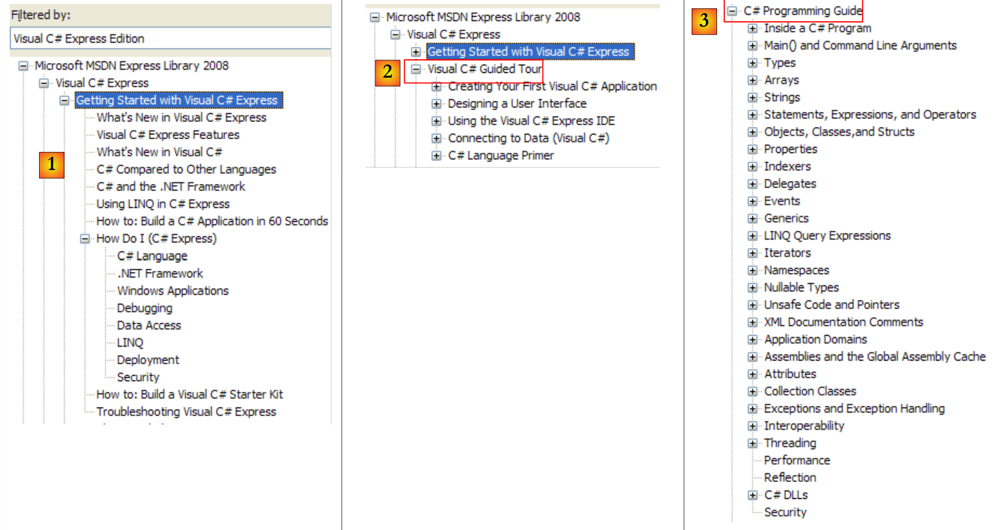
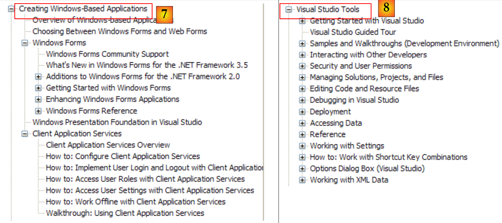
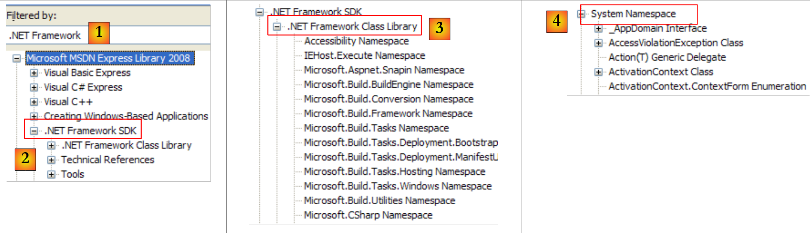
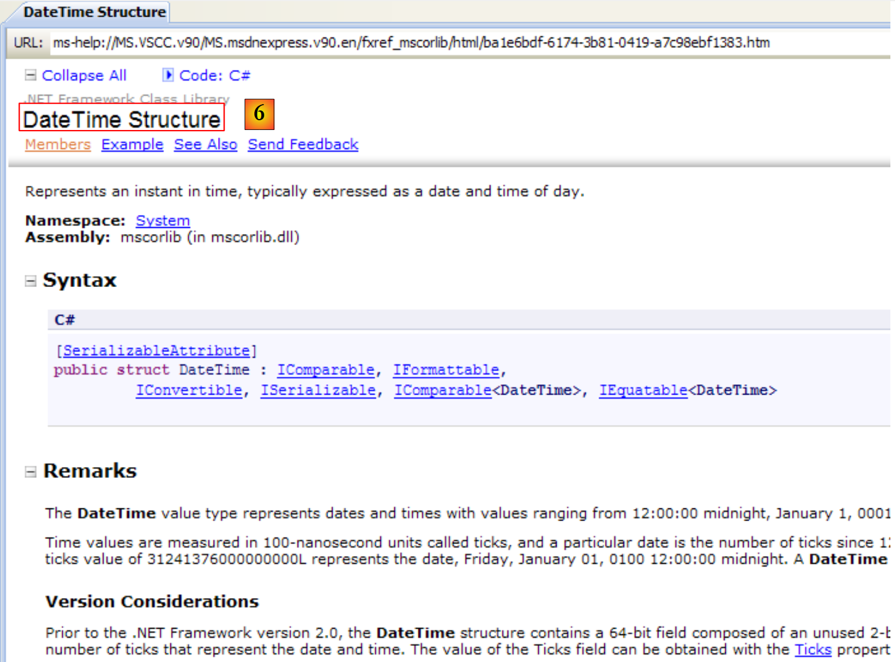
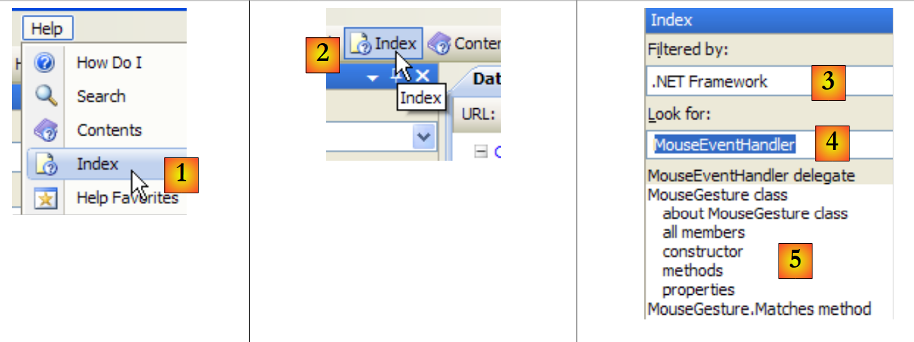
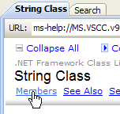
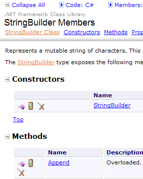
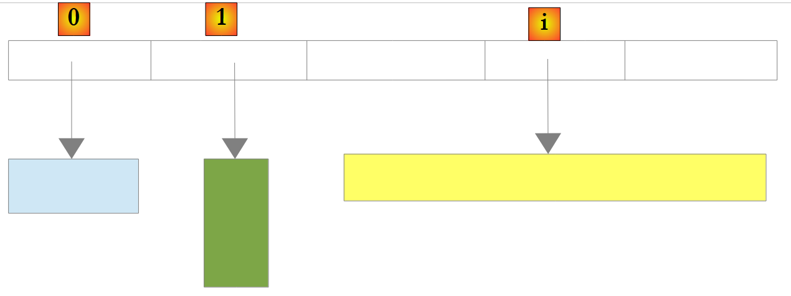

5. Classes .NET de uso comum
Apresentamos aqui algumas classes da plataforma .NET frequentemente utilizadas. Antes disso, mostramos como obter informações sobre as centenas de classes disponíveis. Esta ajuda é indispensável para o programador C#, mesmo que experiente. O nível de qualidade de uma ajuda (acesso fácil, organização compreensível, pertinência da informação, etc.) pode determinar o sucesso ou o fracasso de um ambiente de desenvolvimento.
5.1. Procurar ajuda sobre as classes .NET
Apresentamos aqui algumas orientações para encontrar ajuda com o Visual Studio.NET
5.1.1. Ajuda/Índice
 |
- no [1], selecione a opção Help/Contents do menu.
- em [2], selecione a opção Visual C# Express Edition
- em [3], a árvore de ajuda sobre C#
- em [4], outra opção útil é .NET Framework, que dá acesso a todas as classes do framework .NET.
Vamos dar uma vista de olhos aos títulos dos capítulos da ajuda do C#:
 |
- [1]: uma visão geral do C#
- [2]: uma série de exemplos sobre alguns aspetos do C#
- [3]: um curso de C# — poderia substituir vantajosamente o presente documento…
 |
- [4]: para aprofundar os detalhes do C#
- [5]: útil para programadores de C++ ou Java. Permite evitar algumas armadilhas.
- [6]: quando estiver à procura de exemplos, pode começar por aqui.
 |
- [7]: o que é preciso saber para criar interfaces gráficas
- [8]: para utilizar melhor o IDE Visual Studio Express
 |
- [9]: O SQL Server Express 2005 é um SGBD de qualidade distribuído gratuitamente. Iremos utilizá-lo neste curso.
A ajuda do C# é apenas uma parte do que o programador precisa. A outra parte é a ajuda sobre as centenas de classes do framework .NET que irão facilitar o seu trabalho.
 |
- [1]: selecionamos a ajuda sobre o framework .NET
- [2]: a ajuda encontra-se no ramo .NET Framework SDK
- [3]: o ramo .NET «Framework Class Library» apresenta todas as classes .NET de acordo com o espaço de nomes a que pertencem
- [4]: o espaço de nomes System que foi mais frequentemente utilizado nos exemplos dos capítulos anteriores
 |
- [5]: no espaço de nomes System, um exemplo, neste caso a estrutura DateTime
 |
- [6]: a ajuda sobre a estrutura DateTime
5.1.2. Ajuda/Índice/Pesquisar
A ajuda fornecida pelo MSDN é imensa e pode não se saber onde procurar. Nesse caso, pode-se utilizar o índice da ajuda:
 |
- no [1], utilize a opção [Help/Index] se a janela de ajuda ainda não estiver aberta; caso contrário, utilize [2] numa janela de ajuda já aberta.
- em [3], especifique o domínio no qual a pesquisa deve ser efetuada
- em [4], especifique o que procura, neste caso uma turma
- em [5], a resposta
Outra forma de procurar ajuda é utilizar a função de pesquisa da ajuda:
 |
- em [1], utilize a opção [Help/Search] se a janela de ajuda ainda não estiver aberta; caso contrário, utilize [2] numa janela de ajuda já aberta.
- em [3], especificar o que se pretende pesquisar
- em [4], filtrar os domínios de pesquisa
 |
- em [5], a resposta apresentada sob a forma de diferentes temas onde o texto procurado foi encontrado.
5.2. As cadeias de caracteres
5.2.1. A classe System.String
 |  |  |
A classe System.String é idêntica ao tipo string simples. Possui inúmeras propriedades e métodos. Aqui estão alguns deles:
| |
| |
| |
| |
| |
| |
| |
| |
| |
| |
| |
| |
É importante notar o seguinte: quando um método devolve uma cadeia de caracteres, esta é uma cadeia diferente daquela à qual o método foi aplicado. Assim, S1.Trim() devolve a cadeia S2, e S1 e S2 são duas cadeias diferentes.
Uma cadeia C pode ser considerada como uma matriz de caracteres. Assim,
- C[i] é o caractere i de C
- C.Length é o número de caracteres de C
Consideremos o seguinte exemplo:
using System;
namespace Chap3 {
class Program {
static void Main(string[] args) {
string uneChaine = "l'oiseau vole au-dessus des nuages";
affiche("uneChaine=" + uneChaine);
affiche("uneChaine.Length=" + uneChaine.Length);
affiche("chaine[10]=" + uneChaine[10]);
affiche("uneChaine.IndexOf(\"vole\")=" + uneChaine.IndexOf("vole"));
affiche("uneChaine.IndexOf(\"x\")=" + uneChaine.IndexOf("x"));
affiche("uneChaine.LastIndexOf('a')=" + uneChaine.LastIndexOf('a'));
affiche("uneChaine.LastIndexOf('x')=" + uneChaine.LastIndexOf('x'));
affiche("uneChaine.Substring(4,7)=" + uneChaine.Substring(4, 7));
affiche("uneChaine.ToUpper()=" + uneChaine.ToUpper());
affiche("uneChaine.ToLower()=" + uneChaine.ToLower());
affiche("uneChaine.Replace('a','A')=" + uneChaine.Replace('a', 'A'));
string[] champs = uneChaine.Split(null);
for (int i = 0; i < champs.Length; i++) {
affiche("champs[" + i + "]=[" + champs[i] + "]");
}//for
affiche("Join(\":\",champs)=" + System.String.Join(":", champs));
affiche("(\" abc \").Trim()=[" + " abc ".Trim() + "]");
}//Principal
public static void affiche(string msg) {
// exibe mensagem
Console.WriteLine(msg);
}//exibe
}//classe
}//namespace
A execução produz os seguintes resultados:
Consideremos um novo exemplo:
using System;
namespace Chap3 {
class Program {
static void Main(string[] args) {
// a linha a analisar
string ligne = "un:deux::trois:";
// os separadores de campos
char[] séparateurs = new char[] { ':' };
// divisão
string[] champs = ligne.Split(séparateurs);
for (int i = 0; i < champs.Length; i++) {
Console.WriteLine("Champs[" + i + "]=" + champs[i]);
}
// junção
Console.WriteLine("join=[" + System.String.Join(":", champs) + "]");
}
}
}
e os resultados da execução:
O método Split da classe String permite colocar os elementos de uma cadeia de caracteres numa matriz. A definição do método Split aqui utilizado é a seguinte:
public string[] Split(char[] separator);
tabela de caracteres. Estes caracteres representam os caracteres utilizados para separar os campos da cadeia de caracteres. Assim, se a cadeia for «champ1, champ2, champ3"», poderá utilizar-se separator=new char[] {','}. Se o separador for uma sequência de espaços, utilizar-se-á separator=null. | |
matriz de cadeias de caracteres em que cada elemento da matriz corresponde a um campo da cadeia. |
O método Join é um método estático da classe String:
public static string Join(string separator, string[] value);
matriz de cadeias de caracteres | |
uma cadeia de caracteres que servirá de separador de campos | |
uma cadeia de caracteres formada pela concatenação dos elementos da tabela value, separados pela cadeia separator. |
5.2.2. A classe System.Text.StringBuilder
 |  |  |
Anteriormente, referimos que os métodos da classe String aplicados a uma cadeia de caracteres S1 devolviam outra cadeia S2. A classe System.Text.StringBuilder permite manipular S1 sem ter de criar uma cadeia de caracteres S2. Isto melhora o desempenho, evitando a multiplicação de cadeias de caracteres com uma vida útil muito limitada.
A classe admite vários construtores:
| |
|
Um objeto StringBuilder trabalha com blocos de capacité caracteres para armazenar a cadeia subjacente. Por predefinição, capacité tem o valor 16. O terceiro construtor acima permite especificar a capacidade dos blocos. O número de blocos de caracteres capacité necessários para armazenar uma cadeia S é ajustado automaticamente pela classe StringBuilder. Existem construtores para definir o número máximo de caracteres num objeto StringBuilder. Por predefinição, esta capacidade máxima é 2 147 483 647.
Eis um exemplo que ilustra este conceito de capacité:
using System.Text;
using System;
namespace Chap3 {
class Program {
static void Main(string[] args) {
// str
StringBuilder str = new StringBuilder("test");
Console.WriteLine("taille={0}, capacité={1}", str.Length, str.Capacity);
for (int i = 0; i < 10; i++) {
str.Append("test");
Console.WriteLine("taille={0}, capacité={1}", str.Length, str.Capacity);
}
// str2
StringBuilder str2 = new StringBuilder("test",10);
Console.WriteLine("taille={0}, capacité={1}", str2.Length, str2.Capacity);
for (int i = 0; i < 10; i++) {
str2.Append("test");
Console.WriteLine("taille={0}, capacité={1}", str2.Length, str2.Capacity);
}
}
}
}
- linha 7: criação de um objeto StringBuilder com um tamanho de bloco de 16 caracteres
- linha 8: str.Length é o número atual de caracteres da cadeia str. str.Capacity é o número de caracteres que a cadeia str atual pode armazenar antes da reatribuição de um novo bloco.
- linha 10: str.Append(String S) permite concatenar a cadeia S, do tipo String, à cadeia str, do tipo StringBuilder.
- linha 14: criação de um objeto StringBuilder com uma capacidade de bloco de 10 caracteres
Resultado da execução:
Estes resultados mostram que a classe segue um algoritmo próprio para alocar novos blocos quando a sua capacidade é insuficiente:
- linhas 4-5: aumento da capacidade em 16 caracteres
- linhas 8-9: aumento da capacidade em 32 caracteres, quando 16 teriam sido suficientes.
Eis alguns dos métodos da classe:
| |
| |
| |
| |
|
Eis um exemplo:
using System.Text;
using System;
namespace Chap3 {
class Program {
static void Main(string[] args) {
// str3
StringBuilder str3 = new StringBuilder("test");
Console.WriteLine(str3.Append("abCD").Insert(2, "xyZT").Remove(0, 2).Replace("xy", "XY"));
}
}
}
e os seus resultados:
5.3. As tabelas
As tabelas derivam da classe Array:
 |  |  |
A classe Array possui vários métodos para ordenar um array, procurar um elemento num array, redimensionar um array, etc. Apresentamos algumas propriedades e métodos desta classe. Quase todos estão sobrecarregados, c.a.d, pelo que existem em diferentes variantes. Todos os arrays herdam desta classe.
Propriedades
Métodos
O programa seguinte ilustra a utilização de alguns métodos da classe Array:
using System;
namespace Chap3 {
class Program {
// tipo de pesquisa
enum TypeRecherche { linéaire, dichotomique };
// método principal
static void Main(string[] args) {
// leitura dos elementos de uma tabela introduzidos pelo teclado
double[] éléments;
Saisie(out éléments);
// exibição da matriz não ordenada
Affiche("Tableau non trié", éléments);
// Pesquisa linear na tabela não ordenada
Recherche(éléments, TypeRecherche.linéaire);
// ordenação da tabela
Array.Sort(éléments);
// Exibição da tabela ordenada
Affiche("Tableau trié", éléments);
// Pesquisa dicotómica na tabela ordenada
Recherche(éléments, TypeRecherche.dichotomique);
}
// Introdução dos valores da tabela de elementos
// elementos: referência à tabela criada pelo método
static void Saisie(out double[] éléments) {
bool terminé = false;
string réponse;
bool erreur;
double élément = 0;
int i = 0;
// Inicialmente, a tabela não existe
éléments = null;
// Ciclo de introdução dos elementos da tabela
while (!terminé) {
// pergunta
Console.Write("Elément (réel) " + i + " du tableau (rien pour terminer) : ");
// leitura da resposta
réponse = Console.ReadLine().Trim();
// fim da introdução se a cadeia estiver vazia
if (réponse.Equals(""))
break;
// verificação da introdução
try {
élément = Double.Parse(réponse);
erreur = false;
} catch {
Console.Error.WriteLine("Saisie incorrecte, recommencez");
erreur = true;
}//try-catch
// se não houver erro
if (!erreur) {
// mais um elemento na matriz
i += 1;
// redimensionamento da matriz para acomodar o novo elemento
Array.Resize(ref éléments, i);
// inserção de um novo elemento
éléments[i - 1] = élément;
}
}//enquanto
}
// método genérico para apresentar os elementos de uma matriz
static void Affiche<T>(string texte, T[] éléments) {
Console.WriteLine(texte.PadRight(50, '-'));
foreach (T élément in éléments) {
Console.WriteLine(élément);
}
}
// pesquisa de um elemento na matriz
// elementos: matriz de números reais
// TypeRecherche: dicotômico ou linear
static void Recherche(double[] éléments, TypeRecherche type) {
// Pesquisa
bool terminé = false;
string réponse = null;
double élément = 0;
bool erreur = false;
int i = 0;
while (!terminé) {
// pergunta
Console.WriteLine("Elément cherché (rien pour arrêter) : ");
// leitura e verificação da resposta
réponse = Console.ReadLine().Trim();
// terminado?
if (réponse.Equals(""))
break;
// verificação
try {
élément = Double.Parse(réponse);
erreur = false;
} catch {
Console.WriteLine("Erreur, recommencez...");
erreur = true;
}//try-catch
// se não houver erro
if (!erreur) {
// procura-se o elemento na matriz
if (type == TypeRecherche.dichotomique)
// pesquisa dicotómica
i = Array.BinarySearch(éléments, élément);
else
// pesquisa linear
i = Array.IndexOf(éléments, élément);
// Exibição da resposta
if (i >= 0)
Console.WriteLine("Trouvé en position " + i);
else
Console.WriteLine("Pas dans le tableau");
}//if
}//while
}
}
}
- linhas 27-62: o método Saisie insere os elementos de um tabuleiro éléments introduzidos através do teclado. Como não é possível dimensionar o tabuleiro antecipadamente (não se conhece o seu tamanho final), é necessário redimensioná-lo a cada novo elemento (linha 57). Um algoritmo mais eficiente teria sido alocar espaço para a tabela por grupos de N elementos. No entanto, uma tabela não foi concebida para ser redimensionada. Este caso é melhor tratado com uma lista (ArrayList, List<T>).
- linhas 75-113: o método Recherche permite procurar no tabuleiro éléments um elemento digitado no teclado. O modo de pesquisa varia consoante o tabuleiro esteja ordenado ou não. Para um tabuleiro não ordenado, realiza-se uma pesquisa linear com o método IndexOf da linha 106. Para um tabuleiro ordenado, realiza-se uma pesquisa dicotómica com o método BinarySearch da linha 103.
- linha 18: ordena-se a tabela éléments. Utiliza-se aqui uma variante de Sort que tem apenas um parâmetro: a tabela a ordenar. A relação de ordem utilizada para comparar os elementos da tabela é, então, a implícita desses elementos. Neste caso, os elementos são numéricos. É utilizada a ordem natural dos números.
Os resultados apresentados no ecrã são os seguintes:
5.4. As coleções genéricas
Para além da tabela, existem várias classes para armazenar coleções de elementos. Existem versões genéricas no espaço de nomes System.Collections.Generic e versões não genéricas em System.Collections. Apresentaremos duas coleções genéricas frequentemente utilizadas: a lista e o dicionário.
A lista das coleções genéricas é a seguinte:

5.4.1. A classe genérica List<T>
A classe System.Collections.Generic.List<T> permite implementar coleções de objetos do tipo T cujo tamanho varia durante a execução do programa. Um objeto do tipo List<T> é manipulado quase como um tabuleiro. Assim, o elemento i de uma lista l é denotado por l[i].
Existe também um tipo de lista não genérica: ArrayList, capaz de armazenar referências a quaisquer objetos. ArrayList é funcionalmente equivalente a List<Object>.. Um objeto ArrayList tem o seguinte aspeto:
 |
Na imagem acima, os elementos 0, 1 e i da lista apontam para objetos de tipos diferentes. É necessário que um objeto seja criado primeiro antes de adicionar a sua referência à lista ArrayList. Embora um ArrayList armazene referências a objetos, é possível armazenar números nele. Isto é feito através de um mecanismo denominado Boxing: o número é encapsulado num objeto O do tipo Object e é a referência O que é armazenada na lista. Trata-se de um mecanismo transparente para o programador. Assim, pode escrever-se:
Isto produzirá o seguinte resultado:
 |
No exemplo acima, o número 4 foi encapsulado num objeto O e a referência O é armazenada na lista. Para o recuperar, pode-se escrever:
int i = (int)liste[0];
A operação Object -> int é designada por Unboxing. Se uma lista for inteiramente composta por tipos int, declará-la como List<int> melhora o desempenho. Com efeito, os números do tipo int são então armazenados na própria lista e não em tipos Object externos à lista. As operações de boxing/unboxing deixam de ocorrer.
No caso de um objeto List<T> ou T ser uma classe, a lista armazena, mais uma vez, as referências dos objetos do tipo T:
 |
Eis algumas das propriedades e métodos das listas genéricas:
Propriedades
Métodos
Retomemos o exemplo abordado anteriormente com um objeto do tipo Array e processemo-lo agora com um objeto do tipo List<T>.. Como a lista é um objeto semelhante a uma matriz, o código sofre poucas alterações. Apresentamos apenas as alterações mais significativas:
using System;
using System.Collections.Generic;
namespace Chap3 {
class Program {
// tipo de pesquisa
enum TypeRecherche { linéaire, dichotomique };
// método principal
static void Main(string[] args) {
// leitura dos elementos de uma lista introduzidos pelo teclado
List<double> éléments;
Saisie(out éléments);
// número de elementos
Console.WriteLine("La liste a {0} éléments et une capacité de {1} éléments", éléments.Count, éléments.Capacity);
// exibição da lista não ordenada
Affiche("Liste non triée", éléments);
// Pesquisa linear na lista não ordenada
Recherche(éléments, TypeRecherche.linéaire);
// ordenação da lista
éléments.Sort();
// exibição da lista ordenada
Affiche("Liste triée", éléments);
// Pesquisa dicotómica na lista ordenada
Recherche(éléments, TypeRecherche.dichotomique);
}
// Introdução dos valores da lista de elementos
// elementos: referência à lista criada pelo método
static void Saisie(out List<double> éléments) {
...
// Inicialmente, a lista está vazia
éléments = new List<double>();
// Ciclo de introdução dos elementos da lista
while (!terminé) {
...
// se não houver erros
if (!erreur) {
// mais um elemento na lista
éléments.Add(élément);
}
}//while
}
// método genérico para apresentar os elementos de um objeto enumerável
static void Affiche<T>(string texte, IEnumerable<T> éléments) {
Console.WriteLine(texte.PadRight(50, '-'));
foreach (T élément in éléments) {
Console.WriteLine(élément);
}
}
// procura de um elemento na lista
// elementos: lista de números reais
// TypeRecherche: dicotômico ou linear
static void Recherche(List<double> éléments, TypeRecherche type) {
...
while (!terminé) {
...
// se não houver erro
if (!erreur) {
// procura-se o elemento na lista
if (type == TypeRecherche.dichotomique)
// pesquisa dicotómica
i = éléments.BinarySearch(élément);
else
// pesquisa linear
i = éléments.IndexOf(élément);
// Exibição da resposta
...
}//if
}//while
}
}
}
- linhas 46-51: o método genérico Affiche<T> aceita dois parâmetros:
- o primeiro parâmetro é um texto a escrever
- o segundo parâmetro é um objeto que implementa a interface genérica IEnumerable<T>:
A estrutura foreach( T elemento in elementos), na linha 48, é válida para qualquer objeto *éléments que implemente a interface *IEnumerable. As tabelas (Array) e as listas (List<T>) implementam a interface IEnumerable<T>. Assim, o método Affiche é adequado tanto para apresentar tabelas como listas.
Os resultados da execução do programa são os mesmos que no exemplo que utiliza a classe Array.
5.4.2. A classe Dictionary<TKey,TValue>
A classe System.Collections.Generic.Dictionary<TKey,TValue> permite implementar um dicionário. Pode-se considerar um dicionário como uma tabela com duas colunas:
chave | valor |
chave1 | valor1 |
chave2 | valor2 |
.. | ... |
Na classe Dictionary<TKey,TValue>, as chaves são do tipo Tkey e os valores do tipo TValue. As chaves são únicas, c.a.d, pelo que não podem existir duas chaves idênticas. Um dicionário deste tipo poderia ter o seguinte aspeto se os tipos TKey e TValue designassem classes:
 |
O valor associado à chave C de um dicionário D é obtido através da notação D[C]. Este valor é de leitura e escrita. Assim, pode-se escrever:
Se a chave c não existir no dicionário D, a notação D[c] lança uma exceção.
Os principais métodos e propriedades da classe ***Dictionary<TKey,TValue>*** são os seguintes:
Construtores
Propriedades
Métodos
Consideremos o seguinte programa de exemplo:
using System;
using System.Collections.Generic;
namespace Chap3 {
class Program {
static void Main(string[] args) {
// criação de um dicionário <string,int>
string[] liste = { "jean:20", "paul:18", "mélanie:10", "violette:15" };
string[] champs = null;
char[] séparateurs = new char[] { ':' };
Dictionary<string,int> dico = new Dictionary<string,int>();
for (int i = 0; i <liste.Length; i++) {
champs = liste[i].Split(séparateurs);
dico[champs[0]]= int.Parse(champs[1]);
}//for
// número de elementos no dicionário
Console.WriteLine("Le dictionnaire a " + dico.Count + " éléments");
// lista de chaves
Affiche("[Liste des clés]",dico.Keys);
// lista de valores
Affiche("[Liste des valeurs]", dico.Values);
// lista de chaves e valores
Console.WriteLine("[Liste des clés & valeurs]");
foreach (string clé in dico.Keys) {
Console.WriteLine("clé=" + clé + " valeur=" + dico[clé]);
}
// elimina-se a chave «paul»
Console.WriteLine("[Suppression d'une clé]");
dico.Remove("paul");
// lista de chaves e valores
Console.WriteLine("[Liste des clés & valeurs]");
foreach (string clé in dico.Keys) {
Console.WriteLine("clé=" + clé + " valeur=" + dico[clé]);
}
// pesquisa no dicionário
String nomCherché = null;
Console.Write("Nom recherché (rien pour arrêter) : ");
nomCherché = Console.ReadLine().Trim();
int value;
while (!nomCherché.Equals("")) {
dico.TryGetValue(nomCherché, out value);
if (value!=0) {
Console.WriteLine(nomCherché + "," + value);
} else {
Console.WriteLine("Nom " + nomCherché + " inconnu");
}
// próxima pesquisa
Console.Out.Write("Nom recherché (rien pour arrêter) : ");
nomCherché = Console.ReadLine().Trim();
}//while
}
// método genérico para apresentar os elementos de um tipo enumerável
static void Affiche<T>(string texte, IEnumerable<T> éléments) {
Console.WriteLine(texte.PadRight(50, '-'));
foreach (T élément in éléments) {
Console.WriteLine(élément);
}
}
}
}
- linha 8: um array de string que servirá para inicializar o dicionário <string,int>
- linha 11: o dicionário <string,int>
- linhas 12-15: a sua inicialização a partir da matriz de string da linha 8
- linha 17: número de entradas do dicionário
- linha 19: as chaves do dicionário
- linha 21: os valores do dicionário
- linha 29: eliminação de uma entrada do dicionário
- linha 41: pesquisa de uma chave no dicionário. Se esta não existir, o método TryGetValue atribuirá o valor 0 a value, uma vez que value é do tipo numérico. Esta técnica só é aplicável aqui porque sabemos que o valor 0 não consta do dicionário.
Os resultados da execução são os seguintes:
5.5. Os ficheiros de texto
5.5.1. A classe StreamReader
A classe System.IO.StreamReader permite ler o conteúdo de um ficheiro de texto. Na verdade, é capaz de processar fluxos que não são ficheiros. Aqui estão algumas das suas propriedades e métodos:
Construtores
Propriedades
Métodos
Eis um exemplo:
using System;
using System.IO;
namespace Chap3 {
class Program {
static void Main(string[] args) {
// diretório de execução
Console.WriteLine("Répertoire d'exécution : "+Environment.CurrentDirectory);
string ligne = null;
StreamReader fluxInfos = null;
// leitura do conteúdo do ficheiro infos.txt
try {
// leitura 1
Console.WriteLine("Lecture 1----------------");
using (fluxInfos = new StreamReader("infos.txt")) {
ligne = fluxInfos.ReadLine();
while (ligne != null) {
Console.WriteLine(ligne);
ligne = fluxInfos.ReadLine();
}
}
// leitura 2
Console.WriteLine("Lecture 2----------------");
using (fluxInfos = new StreamReader("infos.txt")) {
Console.WriteLine(fluxInfos.ReadToEnd());
}
} catch (Exception e) {
Console.WriteLine("L'erreur suivante s'est produite : " + e.Message);
}
}
}
}
- linha 8: apresenta o nome do diretório de execução
- linhas 12 e 27: um try/catch para gerir uma eventual exceção.
- linha 15: a estrutura «using flux=new StreamReader(...)» é uma facilidade para não ter de fechar explicitamente o fluxo após a sua utilização. Este encerramento é feito automaticamente assim que se sai do âmbito do using.
- linha 15: o ficheiro lido chama-se infos.txt. Como se trata de um nome relativo, será procurado no diretório de execução indicado na linha 8. Se não estiver lá, será lançada uma exceção, que será gerida pelo try/catch.
- linhas 16-20: o ficheiro é lido linha a linha
- linha 25: o ficheiro é lido de uma só vez
O ficheiro infos.txt é o seguinte:
e está localizado na seguinte pasta do projeto C#:
 |
Vamos descobrir que bin/Release é a pasta de execução quando o projeto é executado através de Ctrl-F5.
A execução produz os seguintes resultados:
Se, na linha 15, introduzirmos o nome do ficheiro xx.txt, obtemos os seguintes resultados:
5.5.2. A classe StreamWriter
A classe System.IO.StreamReader permite escrever num ficheiro de texto. Tal como a classe StreamReader, é, na verdade, capaz de processar fluxos que não são ficheiros. Aqui estão algumas das suas propriedades e métodos:
Construtores
Propriedades
Métodos
Consideremos o seguinte exemplo:
using System;
using System.IO;
namespace Chap3 {
class Program2 {
static void Main(string[] args) {
// diretório de execução
Console.WriteLine("Répertoire d'exécution : " + Environment.CurrentDirectory);
string ligne = null; // uma linha de texto
StreamWriter fluxInfos = null; // o ficheiro de texto
try {
// criação do ficheiro de texto
using (fluxInfos = new StreamWriter("infos2.txt")) {
Console.WriteLine("Mode AutoFlush : {0}", fluxInfos.AutoFlush);
// leitura da linha digitada no teclado
Console.Write("ligne (rien pour arrêter) : ");
ligne = Console.ReadLine().Trim();
// loop enquanto a linha introduzida não estiver vazia
while (ligne != "") {
// gravação da linha no ficheiro de texto
fluxInfos.WriteLine(ligne);
// leitura de uma nova linha introduzida pelo teclado
Console.Write("ligne (rien pour arrêter) : ");
ligne = Console.ReadLine().Trim();
}//while
}
} catch (Exception e) {
Console.WriteLine("L'erreur suivante s'est produite : " + e.Message);
}
}
}
}
- linha 13: mais uma vez, utilizamos a sintaxe using(flux) para não termos de fechar explicitamente o fluxo através de uma operação Close. Este encerramento é efetuado automaticamente à saída do using.
- Porquê um try/catch, nas linhas 11 e 27? Na linha 13, poderíamos indicar um nome de ficheiro no formato /rep1/rep2/ .../fichier com um caminho /rep1/rep2/... que não existe, tornando assim impossível a criação de fichier. Seria então lançada uma exceção. Existem outros casos possíveis de exceção (disco cheio, direitos insuficientes, ...)
Os resultados da execução são os seguintes:
O ficheiro infos2.txt foi criado na pasta bin/Release do projeto:
 |  |
5.6. Os ficheiros binários
As classes System.IO.BinaryReader e System.IO.BinaryWriter servem para ler e escrever ficheiros binários.
Consideremos a seguinte aplicação:
// sintaxe pg texto bin logs
// lê-se um ficheiro de texto (texto) e o seu conteúdo é guardado num ficheiro binário (bin
// o ficheiro de texto contém linhas do tipo nome : idade, que serão armazenadas numa estrutura string, int
// (logs) é um ficheiro de texto de registos
O ficheiro de texto tem o seguinte conteúdo:
O programa é o seguinte:
using System;
using System.IO;
// sintaxe pg texto bin logs
// lê-se um ficheiro de texto (texto) e o seu conteúdo é armazenado num ficheiro binário (bin)
// o ficheiro de texto contém linhas do tipo nome : idade, que serão armazenadas numa estrutura string, int
// (logs) é um ficheiro de texto de registos
namespace Chap3 {
class Program {
static void Main(string[] arguments) {
// são necessários 3 argumentos
if (arguments.Length != 3) {
Console.WriteLine("syntaxe : pg texte binaire log");
Environment.Exit(1);
}//if
// variáveis
string ligne=null;
string nom=null;
int age=0;
int numLigne = 0;
char[] séparateurs = new char[] { ':' };
string[] champs=null;
StreamReader input = null;
BinaryWriter output = null;
StreamWriter logs = null;
bool erreur = false;
// leitura de ficheiro de texto - escrita de ficheiro binário
try {
// abertura do ficheiro de texto para leitura
input = new StreamReader(arguments[0]);
// abertura do ficheiro binário para escrita
output = new BinaryWriter(new FileStream(arguments[1], FileMode.Create, FileAccess.Write));
// abertura do ficheiro de registos para escrita
logs = new StreamWriter(arguments[2]);
// análise do ficheiro de texto
while ((ligne = input.ReadLine()) != null) {
// mais uma linha
numLigne++;
// linha vazia?
if (ligne.Trim() == "") {
// ignora-se
continue;
}
// uma linha com nome: idade
champs = ligne.Split(séparateurs);
// são necessários 2 campos
if (champs.Length != 2) {
// regista-se o erro
logs.WriteLine("La ligne n° [{0}] du fichier [{1}] a un nombre de champs incorrect", numLigne, arguments[0]);
// linha seguinte
continue;
}//if
// o primeiro campo não pode estar vazio
erreur = false;
nom = champs[0].Trim();
if (nom == "") {
// regista-se o erro
logs.WriteLine("La ligne n° [{0}] du fichier [{1}] a un nom vide", numLigne, arguments[0]);
erreur = true;
}
// o segundo campo deve ser um número inteiro >=0
if (!int.TryParse(champs[1],out age) || age<0) {
// regista-se o erro
logs.WriteLine("La ligne n° [{0}] du fichier [{1}] a un âge [{2}] incorrect", numLigne, arguments[0], champs[1].Trim());
erreur = true;
}//se
// se não houver erro, gravam-se os dados no ficheiro binário
if (!erreur) {
output.Write(nom);
output.Write(age);
}
// linha seguinte
}//enquanto
}catch(Exception e){
Console.WriteLine("L'erreur suivante s'est produite : {0}", e.Message);
} finally {
// fecho dos ficheiros
if(input!=null) input.Close();
if(output!=null) output.Close();
if(logs!=null) logs.Close();
}
}
}
}
Vamos analisar as operações relacionadas com a classe BinaryWriter:
- linha 34: o objeto BinaryWriter é aberto pela operação
output=new BinaryWriter(new FileStream(arguments[1],FileMode.Create,FileAccess.Write));
O argumento do construtor deve ser um fluxo (Stream). Neste caso, trata-se de um fluxo criado a partir de um ficheiro (FileStream), cujos dados são:
- (continuação)
- o nome
- a operação a realizar, neste caso FileMode.Create para criar o ficheiro
- o tipo de acesso, neste caso FileAccess.Write para acesso em escrita ao ficheiro
- linhas 70-73: as operações de escrita
A classe BinaryWriter dispõe de vários métodos Write sobrecarregados para gravar os diferentes tipos de dados simples
- linha 81: a operação de encerramento do fluxo
Os três argumentos do método Main são fornecidos ao projeto (através das suas propriedades) [1] e o ficheiro de texto a processar é colocado na pasta bin/Release [2]:
 |
Com o seguinte ficheiro [personnes1.txt]:
os resultados da execução são os seguintes:
 |
- no [1], o ficheiro binário [personnes1.bin] criado, bem como o ficheiro de registos [logs.txt]. Este último tem o seguinte conteúdo:
O conteúdo do ficheiro binário [personnes1.bin] será fornecido pelo programa que se segue. Este programa também aceita três argumentos:
// sintaxe pg bin texto logs
// lê-se um ficheiro binário «bin» e o seu conteúdo é guardado num ficheiro de texto («texto»)
// o ficheiro binário tem uma estrutura string, int
// o ficheiro de texto contém linhas com o formato nome : idade
// logs é um ficheiro de texto com registos
Fazemos, portanto, a operação inversa. Lemos um ficheiro binário para criar um ficheiro de texto. Se o ficheiro de texto produzido for idêntico ao ficheiro original, saberemos que a conversão texto --> binário --> texto decorreu com sucesso. O código é o seguinte:
using System;
using System.IO;
// sintaxe pg bin texto logs
// lê-se um ficheiro binário «bin» e o seu conteúdo é guardado num ficheiro de texto («texto»)
// o ficheiro binário tem uma estrutura string, int
// o ficheiro de texto contém linhas com o formato nome : idade
// logs é um ficheiro de texto com registos
namespace Chap3 {
class Program2 {
static void Main(string[] arguments) {
// são necessários 3 argumentos
if (arguments.Length != 3) {
Console.WriteLine("syntaxe : pg binaire texte log");
Environment.Exit(1);
}//if
// variáveis
string nom = null;
int age = 0;
int numPersonne = 1;
BinaryReader input = null;
StreamWriter output = null;
StreamWriter logs = null;
bool fini;
// leitura de ficheiro binário - escrita de ficheiro de texto
try {
// abertura do ficheiro binário para leitura
input = new BinaryReader(new FileStream(arguments[0], FileMode.Open, FileAccess.Read));
// abertura do ficheiro de texto para escrita
output = new StreamWriter(arguments[1]);
// abertura do ficheiro de registos para escrita
logs = new StreamWriter(arguments[2]);
// análise do ficheiro binário
fini = false;
while (!fini) {
try {
// leitura do nome
nom = input.ReadString().Trim();
// leitura da idade
age = input.ReadInt32();
// gravação no ficheiro de texto
output.WriteLine(nom + ":" + age);
// pessoa seguinte
numPersonne++;
} catch (EndOfStreamException) {
fini = true;
} catch (Exception e) {
logs.WriteLine("L'erreur suivante s'est produite à la lecture de la personne n° {0} : {1}", numPersonne, e.Message);
}
}//while
} catch (Exception e) {
Console.WriteLine("L'erreur suivante s'est produite : {0}", e.Message);
} finally {
// fecho dos ficheiros
if (input != null)
input.Close();
if (output != null)
output.Close();
if (logs != null)
logs.Close();
}
}
}
}
Vamos analisar as operações relacionadas com a classe BinaryReader:
- linha 30: o objeto BinaryReader é aberto pela operação
input=new BinaryReader(new FileStream(arguments[0],FileMode.Open,FileAccess.Read));
O argumento do construtor deve ser um fluxo (Stream). Neste caso, trata-se de um fluxo construído a partir de um ficheiro (FileStream), para o qual se fornece:
- (continuação)
- o nome
- a operação a realizar, neste caso FileMode.Open para abrir um ficheiro existente
- o tipo de acesso, neste caso FileAccess.Read para um acesso de leitura ao ficheiro
- linhas 40, 42: as operações de leitura
A classe BinaryReader dispõe de vários métodos ReadXX para ler os diferentes tipos de dados simples
- linha 60: a operação de encerramento do fluxo
Se executarmos os dois programas em sequência, transformando personnes1.txt em personnes1.bin e, em seguida, personnes1.bin em personnes2.txt2, obtemos os seguintes resultados:
 |
- em [1], o projeto está configurado para executar a segunda aplicação
- em [2], os argumentos passados para Main
- em [3], os ficheiros produzidos pela execução da aplicação.
O conteúdo de [personnes2.txt] é o seguinte:
5.7. As expressões regulares
A classe System.Text.RegularExpressions.Regex permite a utilização de expressões regulares. Estas permitem verificar o formato de uma cadeia de caracteres. Assim, é possível verificar se uma cadeia que representa uma data está, de facto, no formato dd/mm/aa. Para tal, utiliza-se um modelo e compara-se a cadeia com esse modelo. Assim, neste exemplo, j, m e a devem ser algarismos. O modelo de um formato de data válido é, então, «\d\d/\d\d/\d\d», em que o símbolo \d representa um algarismo. Os símbolos que podem ser utilizados num modelo são os seguintes:
Descrição | |
Marca o caractere seguinte como caractere especial ou literal. Por exemplo, «n» corresponde ao caractere «n». «\n» corresponde a um caractere de nova linha. A sequência «\\» corresponde a «\», enquanto que «\»( corresponde a «(». | |
Corresponde ao início da entrada. | |
Corresponde ao fim da introdução. | |
Corresponde ao carácter anterior zero ou mais vezes. Assim, «zo*» corresponde a «z» ou a «zoo». | |
Corresponde ao carácter anterior uma ou mais vezes. Assim, «zo+» corresponde a «zoo», mas não a «z». | |
Corresponde ao carácter anterior zero ou uma vez. Por exemplo, «a?ve?» corresponde a «ve» em «lever». | |
Corresponde a qualquer carácter único, exceto o carácter de nova linha. | |
Procura o modèle e memoriza a correspondência. A subcadeia correspondente pode ser extraída da coleção Matches obtida, utilizando o Item [0]...[n]. Para encontrar correspondências com caracteres entre parênteses ( ), utilize "\(" ou "\)". | |
Corresponde a x ou a y. Por exemplo, «z|foot» corresponde a «z» ou a «foot». «(z|f)oo» corresponde a «zoo» ou a «foo». | |
n é um número inteiro não negativo. Corresponde exatamente a n vezes o carácter. Por exemplo, «o{2}» não corresponde a «o» em «Bob», mas aos dois primeiros «o» em «fooooot». | |
n é um número inteiro não negativo. Corresponde a, pelo menos, n vezes o carácter. Por exemplo, «o{2,}» não corresponde ao «o» em «Bob», mas a todos os «o» em «fooooot». «o{1,}» equivale a «o+» e «o{0,}» equivale a «o*». | |
m e n são números inteiros não negativos. Corresponde a, no mínimo, n e, no máximo, m vezes o carácter. Por exemplo, «o{1,3}» corresponde aos três primeiros «o» em «foooooot» e «o{0,1}» equivale a «o?». | |
Conjunto de caracteres. Corresponde a um dos caracteres indicados. Por exemplo, «[abc]» corresponde a «a» em «plat». | |
Conjunto de caracteres negativo. Corresponde a qualquer caractere não indicado. Por exemplo, «[^abc]» corresponde a «p» em «plat». | |
Intervalo de caracteres. Corresponde a qualquer caractere da série especificada. Por exemplo, «[a-z]» corresponde a qualquer letra minúscula entre «a» e «z». | |
Intervalo de caracteres negativo. Corresponde a qualquer caractere que não se encontre na série especificada. Por exemplo, «[^m-z]» corresponde a qualquer caractere que não se encontre entre «m» e «z». | |
Corresponde a um limite que representa uma palavra, ou seja, à posição entre uma palavra e um espaço. Por exemplo, «er\b» corresponde a «er» em «lever», mas não a «er» em «verbe». | |
Corresponde a um limite que não representa uma palavra. «en*t\B» corresponde a «ent» em «bien entendu». | |
Corresponde a um carácter que representa um algarismo. É equivalente a [0-9]. | |
Corresponde a um carácter que não representa um algarismo. É equivalente a [^0-9]. | |
Corresponde a um carácter de salto de página. | |
Corresponde a um carácter de nova linha. | |
Corresponde a um carácter de retorno de carro. | |
Corresponde a qualquer espaço em branco, incluindo espaço, tabulação, salto de página, etc. É equivalente a «[ \f\n\r\t\v]». | |
Corresponde a qualquer caractere de espaço não em branco. É equivalente a «[^ \f\n\r\t\v]». | |
Corresponde a um carácter de tabulação. | |
Corresponde a um carácter de tabulação vertical. | |
Corresponde a qualquer carácter que represente uma palavra e inclua um sublinhado. É equivalente a «[A-Za-z0-9_]». | |
Corresponde a qualquer carácter que não represente uma palavra. É equivalente a «[^A-Za-z0-9_]». | |
Corresponde a num, em que num é um número inteiro positivo. Refere-se às correspondências memorizadas. Por exemplo, «(.)\1» corresponde a dois caracteres idênticos consecutivos. | |
Corresponde a n, em que n é um valor de escape octal. Os valores de escape octais devem ter 1, 2 ou 3 dígitos. Por exemplo, «\11» e «\011» correspondem ambos a um carácter de tabulação. «\0011» equivale a «\001» e «1». Os valores de escape octais não devem exceder 256. Se tal acontecer, apenas os dois primeiros dígitos serão considerados na expressão. Permite utilizar os códigos ASCII em expressões regulares. | |
Corresponde a n, em que n é um valor de escape hexadecimal. Os valores de escape hexadecimais têm de incluir obrigatoriamente dois dígitos. Por exemplo, «\x41» corresponde a «A». «\x041» equivale a «\x04» e «1». Permite utilizar os códigos ASCII em expressões regulares. |
Um elemento num modelo pode estar presente uma ou mais vezes. Vejamos alguns exemplos relacionados com o símbolo \d, que representa um algarismo:
modelo | significado |
\d | um algarismo |
\d? | 0 ou 1 dígito |
\d* | 0 ou mais dígitos |
\d+ | 1 ou mais dígitos |
\d{2} | 2 algarismos |
\d{3,} | pelo menos 3 algarismos |
\d{5,7} | entre 5 e 7 dígitos |
Imaginemos agora o modelo capaz de descrever o formato esperado para uma cadeia de caracteres:
cadeia procurada | modelo |
uma data no formato dd/mm/aa | \d{2}/\d{2}/\d{2} |
uma hora no formato hh:mm:ss | \d{2}:\d{2}:\d{2} |
um número inteiro sem sinal | \d+ |
uma sequência de espaços, que pode estar vazia | \s* |
um número inteiro sem sinal que pode ser precedido ou seguido de espaços | \s*\d+\s* |
um número inteiro que pode ser com sinal e precedido ou seguido de espaços | \s*[+|-]?\s*\d+\s* |
um número real sem sinal que pode ser precedido ou seguido de espaços | \s*\d+(.\d*)?\s* |
um número real que pode ser com sinal e precedido ou seguido de espaços | \s*[+|]?\s*\d+(.\d*)?\s* |
uma cadeia de caracteres que contém a palavra juste | \bjuste\b |
É possível especificar onde se procura o padrão na cadeia:
padrão | significado |
^padrão | o padrão inicia a cadeia |
padrão$ | o modelo termina a cadeia |
^padrão$ | o modelo inicia e termina a cadeia |
padrão | o padrão é procurado em toda a cadeia, começando pelo início da mesma. |
cadeia procurada | padrão |
uma cadeia que termina com um ponto de exclamação | !$ |
uma cadeia que termina com um ponto | \.$ |
uma cadeia que começa com a sequência // | ^// |
uma cadeia que contém apenas uma palavra, eventualmente seguida ou precedida de espaços | ^\s*\w+\s*$ |
uma cadeia que contenha duas palavras, eventualmente seguidas ou precedidas de espaços | ^\s*\w+\s*\w+\s*$ |
uma cadeia que contenha a palavra secret | \bsecret\b |
Os subconjuntos de um padrão podem ser «recuperados». Assim, não só é possível verificar se uma cadeia corresponde a um padrão específico, como também é possível recuperar nessa cadeia os elementos correspondentes aos subconjuntos do padrão que foram colocados entre parênteses. Assim, se analisarmos uma cadeia de caracteres que contenha uma data dd/mm/aa e, além disso, quisermos extrair os elementos dd, mm e aa dessa data, utilizaremos o padrão (\d\d)/(\d\d)/(\d\d).
5.7.1. Verificar se uma cadeia corresponde a um modelo determinado
Um objeto do tipo Regex é construído da seguinte forma:
Depois de criada a expressão regular modelo, é possível compará-la com cadeias de caracteres utilizando o método IsMatch:
Eis um exemplo:
using System;
using System.Text.RegularExpressions;
namespace Chap3 {
class Program {
static void Main(string[] args) {
// uma expressão regular modelo
string modèle1 = @"^\s*\d+\s*$";
Regex regex1 = new Regex(modèle1);
// comparar um exemplar com o padrão
string exemplaire1 = " 123 ";
if (regex1.IsMatch(exemplaire1)) {
Console.WriteLine("[{0}] correspond au modèle [{1}]", exemplaire1, modèle1);
} else {
Console.WriteLine("[{0}] ne correspond pas au modèle [{1}]", exemplaire1, modèle1);
}//if
string exemplaire2 = " 123a ";
if (regex1.IsMatch(exemplaire2)) {
Console.WriteLine("[{0}] correspond au modèle [{1}]", exemplaire2, modèle1);
} else {
Console.WriteLine("[{0}] ne correspond pas au modèle [{1}]", exemplaire2, modèle1);
}//if
}
}
}
e os resultados da execução:
5.7.2. Encontrar todas as ocorrências de um padrão numa cadeia
O método Matches permite recuperar os elementos de uma cadeia de caracteres que correspondam a um padrão:
A classe MatchCollection possui uma propriedade Count que corresponde ao número de elementos da coleção. Se résultats for um objeto MatchCollection, então [i] é o elemento i dessa coleção e é do tipo Match. A classe Match possui várias propriedades, entre as quais as seguintes:
- Value: o valor do objeto Match,, ou seja, um elemento que corresponde ao modelo
- Index: a posição em que o elemento foi encontrado na cadeia explorada
Analisemos o seguinte exemplo:
using System;
using System.Text.RegularExpressions;
namespace Chap3 {
class Program2 {
static void Main(string[] args) {
// várias ocorrências do modelo no exemplo
string modèle2 = @"\d+";
Regex regex2 = new Regex(modèle2);
string exemplaire3 = " 123 456 789 ";
MatchCollection résultats = regex2.Matches(exemplaire3);
Console.WriteLine("Modèle=[{0}],exemplaire=[{1}]", modèle2, exemplaire3);
Console.WriteLine("Il y a {0} occurrences du modèle dans l'exemplaire ", résultats.Count);
for (int i = 0; i < résultats.Count; i++) {
Console.WriteLine("[{0}] trouvé en position {1}", résultats[i].Value, résultats[i].Index);
}//for
}
}
}
- linha 8: o padrão procurado é uma sequência de algarismos
- linha 10: a cadeia na qual se procura este padrão
- linha 11: recuperam-se todos os elementos de exemplaire3 que correspondem ao padrão modèle2
- linhas 14-16: exibem-se os resultados
Os resultados da execução do programa são os seguintes:
5.7.3. Recuperar partes de um modelo
É possível «recuperar» subconjuntos de um modelo. Assim, não só se pode verificar se uma cadeia de caracteres corresponde a um modelo específico, como também se pode recuperar nessa cadeia os elementos correspondentes aos subconjuntos do modelo que foram colocados entre parênteses. Assim, se analisarmos uma cadeia de caracteres que contenha uma data dd/mm/aa e quisermos, além disso, extrair os elementos dd, mm e aa dessa data, utilizaremos o modelo (\d\d)/(\d\d)/(\d\d).
Vejamos o seguinte exemplo:
using System;
using System.Text.RegularExpressions;
namespace Chap3 {
class Program3 {
static void Main(string[] args) {
// captura de elementos no modelo
string modèle3 = @"(\d\d):(\d\d):(\d\d)";
Regex regex3 = new Regex(modèle3);
string exemplaire4 = "Il est 18:05:49";
// verificação do modelo
Match résultat = regex3.Match(exemplaire4);
if (résultat.Success) {
// a instância corresponde ao modelo
Console.WriteLine("L'exemplaire [{0}] correspond au modèle [{1}]",exemplaire4,modèle3);
// são apresentados os grupos de parênteses
for (int i = 0; i < résultat.Groups.Count; i++) {
Console.WriteLine("groupes[{0}]=[{1}] trouvé en position {2}",i, résultat.Groups[i].Value,résultat.Groups[i].Index);
}//for
} else {
// a instância não corresponde ao modelo
Console.WriteLine("L'exemplaire[{0}] ne correspond pas au modèle [{1}]", exemplaire4, modèle3);
}
}
}
}
A execução deste programa produz os seguintes resultados:
A novidade encontra-se nas linhas 12-19:
- linha 12: a cadeia exemplaire4 é comparada com o modelo regex3 através do método Match. Este método devolve um objeto Match já apresentado. Utilizamos aqui duas novas propriedades desta classe:
- Success (linha 13): indica se houve correspondência
- Groups (linhas 17, 18): coleção em que
- Groups[0] corresponde à parte da cadeia que corresponde ao modelo
- Groups[i] (i>=1) corresponde ao grupo de parênteses n.º i
Se résultat for do tipo Match, então résultats.Groups é do tipo GroupCollection e résultats.Groups[i] é do tipo Group. A classe Group tem duas propriedades que utilizamos aqui:
- Value (linha 18): o valor do objeto Group, que é o elemento correspondente ao conteúdo de um parêntese
- Index (linha 18): a posição em que o elemento foi encontrado na cadeia explorada
5.7.4. Um programa de treino
Encontrar a expressão regular que permite verificar se uma cadeia corresponde efetivamente a um determinado padrão é, por vezes, um verdadeiro desafio. O programa seguinte permite praticar. Solicita um padrão e uma cadeia e indica se a cadeia corresponde ou não ao padrão.
using System;
using System.Text.RegularExpressions;
namespace Chap3 {
class Program4 {
static void Main(string[] args) {
// dados
string modèle, chaine;
Regex regex = null;
MatchCollection résultats;
// solicita-se ao utilizador os modelos e os exemplares a comparar com este
while (true) {
// é solicitado o modelo
Console.Write("Tapez le modèle à tester ou rien pour arrêter :");
modèle = Console.In.ReadLine();
// terminado?
if (modèle.Trim() == "")
break;
// cria-se a expressão regular
try {
regex = new Regex(modèle);
} catch (Exception ex) {
Console.WriteLine("Erreur : " + ex.Message);
continue;
}
// solicita-se ao utilizador os exemplares a comparar com o modelo
while (true) {
Console.Write("Tapez la chaîne à comparer au modèle [{0}] ou rien pour arrêter :", modèle);
chaine = Console.ReadLine();
// concluído?
if (chaine.Trim() == "")
break;
// faz-se a comparação
résultats = regex.Matches(chaine);
// foi bem-sucedida?
if (résultats.Count == 0) {
Console.WriteLine("Je n'ai pas trouvé de correspondances");
continue;
}//se
// são apresentados os elementos que correspondem ao modelo
for (int i = 0; i < résultats.Count; i++) {
Console.WriteLine("J'ai trouvé la correspondance [{0}] en position [{1}]", résultats[i].Value, résultats[i].Index);
// dos subelementos
if (résultats[i].Groups.Count != 1) {
for (int j = 1; j < résultats[i].Groups.Count; j++) {
Console.WriteLine("\tsous-élément [{0}] en position [{1}]", résultats[i].Groups[j].Value, résultats[i].Groups[j].Index);
}
}
}
}
}
}
}
}
Eis um exemplo de execução:
5.7.5. O método Split
Já nos deparámos com este método na classe String:
|
O método Split da classe Regex permite-nos definir o separador com base num modelo:
|
Suponhamos, por exemplo, que tenhamos num ficheiro de texto linhas com o formato campo1, campo2, …, campo n. Os campos são separados por uma vírgula, mas esta pode ser precedida ou seguida de espaços. O método Split da classe string não é, portanto, adequado. O método RegEx oferece a solução. Se ligne for a linha lida, os campos poderão ser obtidos através de
, tal como mostra o exemplo seguinte:
using System;
using System.Text.RegularExpressions;
namespace Chap3 {
class Program5 {
static void Main(string[] args) {
// uma linha
string ligne = "abc , def , ghi";
// um modelo
Regex modèle = new Regex(@"\s*,\s*");
// descomposição da linha em campos
string[] champs = modèle.Split(ligne);
// exibição
for (int i = 0; i < champs.Length; i++) {
Console.WriteLine("champs[{0}]=[{1}]", i, champs[i]);
}
}
}
}
Resultados da execução:
5.8. Aplicação de exemplo - V3
Retomamos a aplicação analisada nos parágrafos 3.6 (versão 1) e 4.10 (versão 2).
Na última versão analisada, o cálculo do imposto era efetuado na classe abstrata AbstractImpot:
namespace Chap2 {
abstract class AbstractImpot : IImpot {
// as faixas de imposto necessárias para o cálculo do imposto
// provêm de uma fonte externa
protected TrancheImpot[] tranchesImpot;
// cálculo do imposto
public int calculer(bool marié, int nbEnfants, int salaire) {
// cálculo do número de quotas
decimal nbParts;
if (marié) nbParts = (decimal)nbEnfants / 2 + 2;
else nbParts = (decimal)nbEnfants / 2 + 1;
if (nbEnfants >= 3) nbParts += 0.5M;
// cálculo do rendimento tributável e do quociente familiar
decimal revenu = 0.72M * salaire;
decimal QF = revenu / nbParts;
// cálculo do imposto
tranchesImpot[tranchesImpot.Length - 1].Limite = QF + 1;
int i = 0;
while (QF > tranchesImpot[i].Limite) i++;
// retorno do resultado
return (int)(revenu * tranchesImpot[i].CoeffR - nbParts * tranchesImpot[i].CoeffN);
}//calcular
}//classe
}
O método calculer da linha 38 utiliza a tabela tranchesImpot da linha 35, tabela que não é inicializada pela classe AbstractImpot. É por isso que é abstrata e tem de ser derivada para ser útil. Esta inicialização era efetuada pela classe derivada HardwiredImpot:
using System;
namespace Chap2 {
class HardwiredImpot : AbstractImpot {
// tabelas de dados necessárias para o cálculo do imposto
decimal[] limites = { 4962M, 8382M, 14753M, 23888M, 38868M, 47932M, 0M };
decimal[] coeffR = { 0M, 0.068M, 0.191M, 0.283M, 0.374M, 0.426M, 0.481M };
decimal[] coeffN = { 0M, 291.09M, 1322.92M, 2668.39M, 4846.98M, 6883.66M, 9505.54M };
public HardwiredImpot() {
// criação da tabela de escalões de imposto
tranchesImpot = new TrancheImpot[limites.Length];
// preenchimento
for (int i = 0; i < tranchesImpot.Length; i++) {
tranchesImpot[i] = new TrancheImpot { Limite = limites[i], CoeffR = coeffR[i], CoeffN = coeffN[i] };
}
}
}// classe
}// espaço de nomes
No exemplo anterior, os dados necessários para o cálculo do imposto estavam «embutidos» no código da classe. A nova versão do exemplo coloca-os num ficheiro de texto:
4962:0:0
8382:0,068:291,09
14753:0,191:1322,92
23888:0,283:2668,39
38868:0,374:4846,98
47932:0,426:6883,66
0:0,481:9505,54
Uma vez que a execução deste ficheiro pode gerar exceções, criamos uma classe especial para as gerir:
using System;
namespace Chap3 {
class FileImpotException : Exception {
// códigos de erro
[Flags]
public enum CodeErreurs { Acces = 1, Ligne = 2, Champ1 = 4, Champ2 = 8, Champ3 = 16 };
// código de erro
public CodeErreurs Code { get; set; }
// construtores
public FileImpotException() {
}
public FileImpotException(string message)
: base(message) {
}
public FileImpotException(string message, Exception e)
: base(message,e) {
}
}
}
- linha 4: a classe FileImpotException deriva da classe Exception. Servirá para registar qualquer erro que ocorra durante a processamento do ficheiro de texto com os dados.
- linha 7: uma enumeração que representa códigos de erro:
- Acces: erro de acesso ao ficheiro de texto com os dados
- Ligne: linha que não contém os três campos esperados
- Champ1: o campo n.º 1 está errado
- Champ2: o campo n.º 2 está incorreto
- Champ3: o campo n.º 3 está incorreto
Alguns destes erros podem ocorrer em conjunto (Champ1, Champ2, Champ3). Por isso, a enumeração CodeErreurs foi anotada com o atributo [Flags], o que implica que os diferentes valores da enumeração devem ser potências de 2. Um erro nos campos 1 e 2 resultará, então, no código de erro Champ1 | Champ2.
- linha 10: a propriedade automática Code armazenará o código do erro.
- linha 15: um construtor que permite criar um objeto FileImpotException, passando-lhe como parâmetro uma mensagem de erro.
- linha 18: um construtor que permite criar um objeto FileImpotException, passando-lhe como parâmetros uma mensagem de erro e a exceção que originou o erro.
A classe que inicializa o array tranchesImpot da classe AbstractImpot é agora a seguinte:
using System;
using System.Collections.Generic;
using System.IO;
using System.Text.RegularExpressions;
namespace Chap3 {
class FileImpot : AbstractImpot {
public FileImpot(string fileName) {
// dados
List<TrancheImpot> listTranchesImpot = new List<TrancheImpot>();
int numLigne = 1;
// exceção
FileImpotException fe = null;
// leitura do conteúdo do ficheiro fileName, linha a linha
Regex pattern = new Regex(@"s*:\s*");
// inicialmente sem erros
FileImpotException.CodeErreurs code = 0;
try {
using (StreamReader input = new StreamReader(fileName)) {
while (!input.EndOfStream && code == 0) {
// linha atual
string ligne = input.ReadLine().Trim();
// as linhas vazias são ignoradas
if (ligne == "") continue;
// linha dividida em três campos separados por:
string[] champsLigne = pattern.Split(ligne);
// existem 3 campos?
if (champsLigne.Length != 3) {
code = FileImpotException.CodeErreurs.Ligne;
}
// conversões dos 3 campos
decimal limite = 0, coeffR = 0, coeffN = 0;
if (code == 0) {
if (!Decimal.TryParse(champsLigne[0], out limite)) code = FileImpotException.CodeErreurs.Champ1;
if (!Decimal.TryParse(champsLigne[1], out coeffR)) code |= FileImpotException.CodeErreurs.Champ2;
if (!Decimal.TryParse(champsLigne[2], out coeffN)) code |= FileImpotException.CodeErreurs.Champ3; ;
}
// erro?
if (code != 0) {
// regista-se o erro
fe = new FileImpotException(String.Format("Ligne n° {0} incorrecte", numLigne)) { Code = code };
} else {
// memoriza-se a nova faixa de imposto
listTranchesImpot.Add(new TrancheImpot() { Limite = limite, CoeffR = coeffR, CoeffN = coeffN });
// linha seguinte
numLigne++;
}
}
}
// transfere-se a lista listImpot para a tabela tranchesImpot
if (code == 0) {
// transfere-se a lista listImpot para a tabela tranchesImpot
tranchesImpot = listTranchesImpot.ToArray();
}
} catch (Exception e) {
// regista-se o erro
fe= new FileImpotException(String.Format("Erreur lors de la lecture du fichier {0}", fileName), e) { Code = FileImpotException.CodeErreurs.Acces };
}
// erro a comunicar?
if (fe != null) throw fe;
}
}
}
- linha 7: a classe FileImpot deriva da classe AbstractImpot, tal como acontecia na versão 2 com a classe HardwiredImpot.
- linha 9: o construtor da classe FileImpot tem como função inicializar o campo trancheImpot da sua classe base AbstractImpot. Aceita como parâmetro o nome do ficheiro de texto que contém os dados.
- linha 11: o campo tranchesImpot da classe base AbstractImpot é um tabulero que deve ser preenchido com os dados do ficheiro filename passado como parâmetro. A leitura de um ficheiro de texto é sequencial. Só se sabe o número de linhas depois de ter lido o ficheiro na íntegra. Por isso, não é possível dimensionar a matriz tranchesImpot. Os dados serão armazenados temporariamente na lista genérica listTranchesImpot.
Recorde-se que o tipo TrancheImpot é uma estrutura:
namespace Chap3 {
// uma faixa de imposto
struct TrancheImpot {
public decimal Limite { get; set; }
public decimal CoeffR { get; set; }
public decimal CoeffN { get; set; }
}
}
- linha 14: fe, do tipo FileImpotException, serve para encapsular um eventual erro de processamento do ficheiro de texto.
- linha 16: a expressão regular do separador de campos numa linha champ1:champ2:champ3 do ficheiro de texto. Os campos são separados pelo carácter :, precedido e seguido por um número qualquer de espaços.
- linha 18: o código do erro em caso de erro
- linha 20: processamento do ficheiro de texto com um StreamReader
- linha 21: o ciclo repete-se enquanto houver uma linha por ler e não tiver ocorrido nenhum erro
- linha 27: a linha lida é dividida em campos através da expressão regular da linha 16
- linhas 29-31: verifica-se se a linha tem efetivamente três campos — regista-se um eventual erro
- linhas 33-38: conversão das três cadeias de caracteres em três números decimais — registam-se eventuais erros
- linhas 40-43: se tiver ocorrido um erro, é criada uma exceção do tipo FileImpotException.
- linhas 44-47: se não tiver havido erro, passa-se à leitura da linha seguinte do ficheiro de texto, após ter guardado os dados da linha atual.
- linhas 52-55: à saída da boca while, os dados da lista genérica listTranchesImpot são copiados para a tabela tranchesImpot da classe base AbstractImpot. Recorde-se que esse era o objetivo do criador.
- linhas 56-59: gestão de uma eventual exceção. Esta é encapsulada num objeto do tipo FileImpotException.
- linha 61: se a exceção fe da linha 18 tiver sido inicializada, então é lançada.
O projeto C# completo é o seguinte:
 |
- em [1]: o projeto completo
- em [2,3]: as propriedades do ficheiro [DataImpot.txt] [2]. A propriedade [Copy to Output Directory] [3] é definida como «always». Isto faz com que o ficheiro [DataImpot.txt] seja copiado para a pasta bin/Release (modo Release) ou bin/Debug (modo Debug) em cada execução. É aí que o executável o procura.
- No [4]: faz-se o mesmo com o ficheiro [DataImpotInvalide.txt].
O conteúdo de [DataImpot.txt] é o seguinte:
4962:0:0
8382:0,068:291,09
14753:0,191:1322,92
23888:0,283:2668,39
38868:0,374:4846,98
47932:0,426:6883,66
0:0,481:9505,54
O conteúdo de [DataImpotInvalide.txt] é o seguinte:
O programa de teste [Program.cs] não sofreu alterações: trata-se do programa da versão 2, parágrafo 4.10, com a seguinte diferença:
using System;
namespace Chap3 {
class Program {
static void Main() {
...
// criação de um objeto IImpot
IImpot impot = null;
try {
// criação de um objeto IImpot
impot = new FileImpot("DataImpot.txt");
} catch (FileImpotException e) {
// exibição de erro
string msg = e.InnerException == null ? null : String.Format(", Exception d'origine : {0}", e.InnerException.Message);
Console.WriteLine("L'erreur suivante s'est produite : [Code={0},Message={1}{2}]", e.Code, e.Message, msg == null ? "" : msg);
// interrupção do programa
Environment.Exit(1);
}
// loop infinito
while (true) {
...
}//while
}
}
}
- linha 8: objeto impot do tipo da interface IImpot
- linha 11: instanciação do objeto impot com um objeto do tipo FileImpot. Esta operação pode gerar uma exceção que é tratada pelo bloco try/catch das linhas 9, 12 e 18.
Eis alguns exemplos de execução:
Com o ficheiro [DataImpot.txt]
Com um ficheiro [xx] inexistente
Com o ficheiro [DataImpotInvalide.txt]